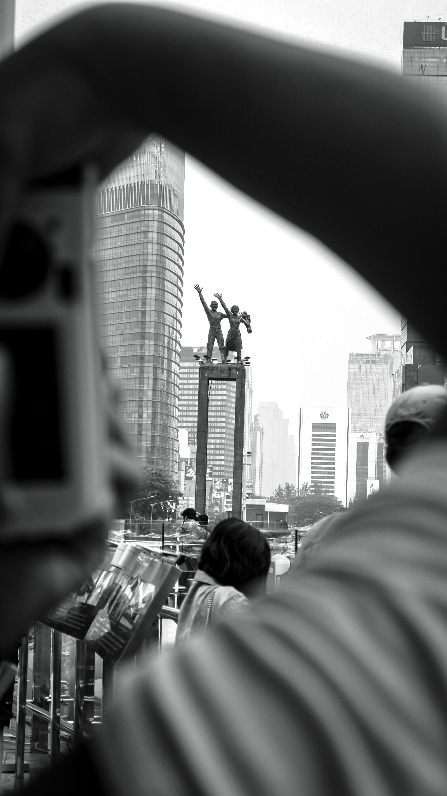
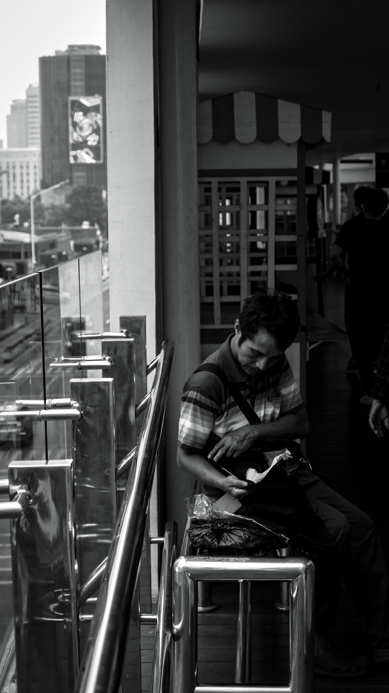
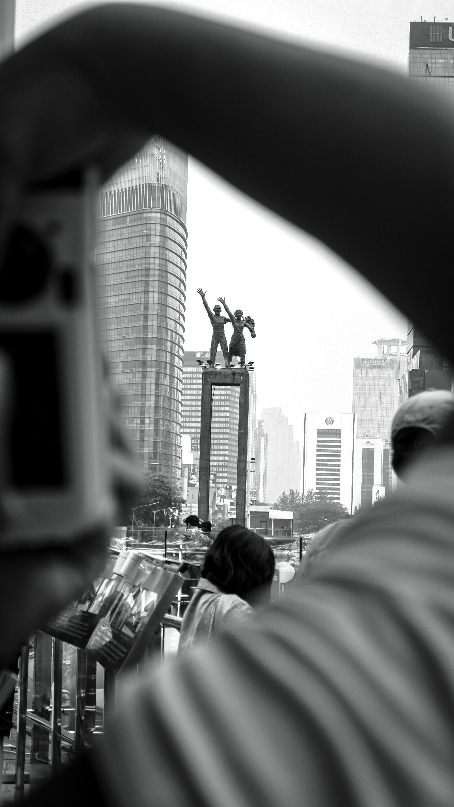
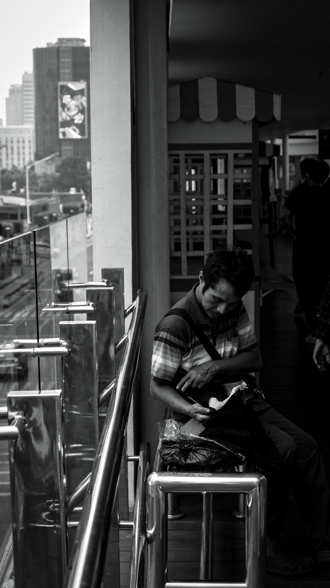
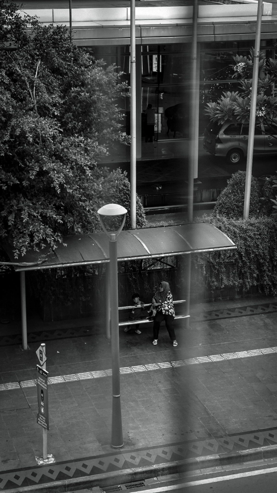
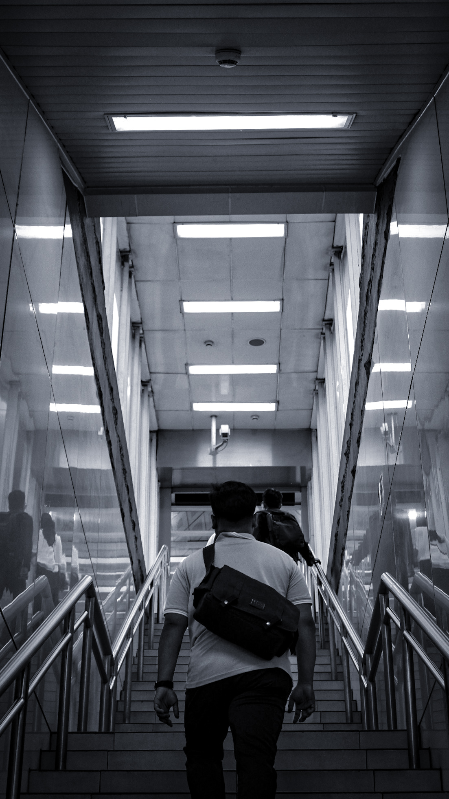
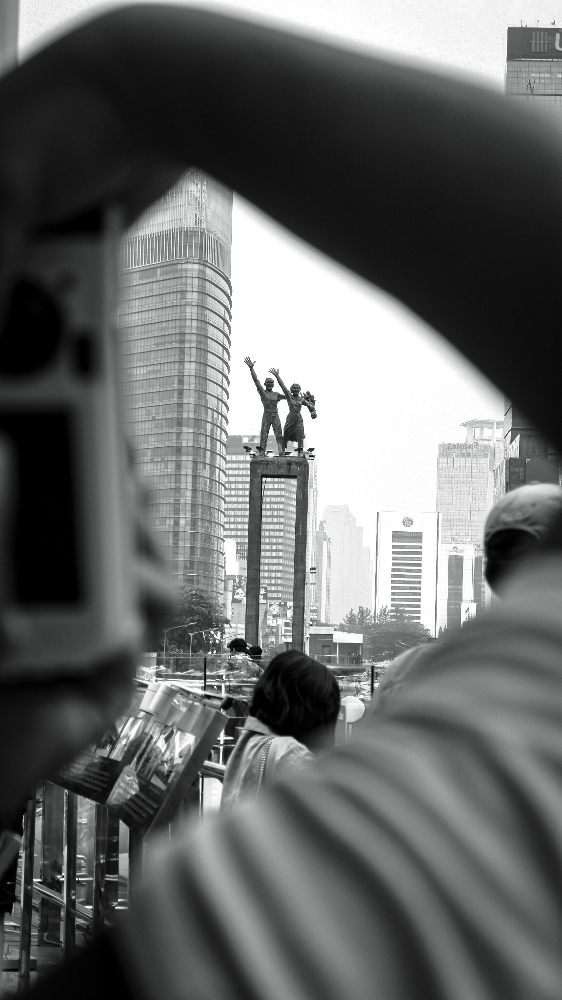
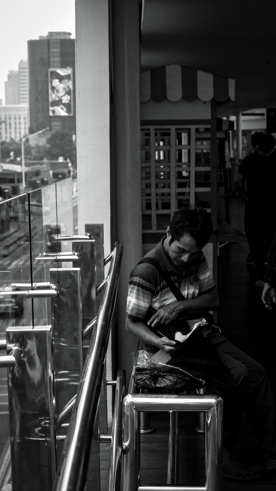

Galery
 






Hai Aku vitto.Nama panjang Radhitya Alvitto Biasa dipanggil vitto/radit ya bebas... HobiKu fotografi,Color Grading dan yang baru-baru ini yaitu Coding. Asli Banyak cuma bingung Apa Saja. Aku lahir di Tangerang 14 Februari 2008,kini aku sekolah di SMk Telkom Purwokerto dan memilih jurusan RPL ya kalo sekarang namanya PPLG (Pengembangan Perangkat Lunak dan Gim). lalu untuk Memenuhi Tugas PAS aku ditugaskan membuat website sendiri.
kenapa fotografi bisa menjadi hobiku karena dengan foto kita dapat mengabadikan suatu moment. hobi foto aslinya sudah senang dari lama tapi mulai tahun ini mulai ditekuni dan menggali skil lebih dibidang fotografi
color grading untuk menambah ciri khas dari foto kita,Dan juga menambahkan sentuhan artistik pada foto atau untuk mengoreksi warna agar sesuai dengan keadaan pencahayaan yang sebenarnya.
hobi ini dimulai dimana aku masuk smp telkom dan diperkenalan dengan coding.lalu masuknya di jurusan ini aku lebih banyak tentang dunia coding.

